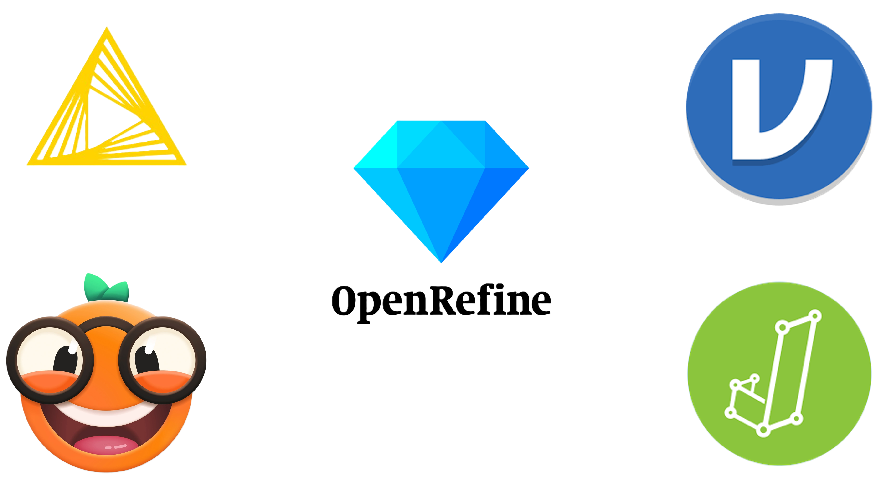

Artigo à Prova de Futuro
Jornada de Open Science na Prática
Objetivo da Aula
- 📊 Gerenciamento de dados
- 💻 Código e Software
- 🤝 Colaboração
- 📁 Organização de projetos
- 🔄 Acompanhamento de mudanças
- 📝 Redação de manuscritos
- 🎯 Boas práticas complementares
Referência Principal
Wilson et al. (2017). Good enough practices in scientific computing. PLOS Computational Biology, 13(6), e1005510.
https://doi.org/10.1371/journal.pcbi.1005510
Esse guia foi adaptado e atualizado para um Curso Carpentries em 2024.
⚠️ Principais Barreiras à Reprodutibilidade
1. Código Ilegível
- Sem comentários ou explicações
- Nomes crípticos de variáveis (
x1,temp,final2)
2. Dependências Não Documentadas
- “Funcionou no meu computador” mas pacotes não listados
- Versões diferentes causam resultados diferentes
3. Caminhos Absolutos
C:/Users/Pablo/...não funciona em outros PCs- Quebra portabilidade do código
⚠️ Principais Barreiras (cont.)
4. Passos Manuais
- “Abra Excel e copie coluna B…” ← NÃO reprodutível!
- Toda transformação deve estar em SCRIPT
5. Aleatoriedade Não Controlada
- Esquecer
set.seed()em simulações/bootstraps
6. Dados Brutos Modificados
- Editar dados originais diretamente
- Perda de rastreabilidade
💡 Nesta aula vamos aprender a evitar essas barreiras!
📊 Gerenciamento de Dados
Gerenciamento de Dados
a. Salve os dados brutos
- Nunca sobreescreva os dados originais
- Use permissões de somente leitura
b. Backup dos dados brutos
- Google Drive, OneDrive, Dropbox
- OSF integra com esses serviços: https://osf.io/dnrgf/addons/
c. Transformar dados para formatos mais fáceis
- CSV, JSON ao invés de Excel
- Facilita manipulação em R/Python
Tidy Data: Os 3 Princípios 🎲
Princípios fundamentais:
- Cada variável = uma coluna
- Cada observação = uma linha
- Cada tipo de unidade observacional = uma tabela
Tidy Data: Exemplo Prático
❌ Dados “bagunçados” (WIDE):
| Participante | Jan_2023 | Fev_2023 | Mar_2023 |
|---|---|---|---|
| P001 | 85 | 90 | 88 |
| P002 | 78 | 82 | 85 |
- Meses são valores, não variáveis!
- Dificulta análise temporal
- Complica filtragem/agregação
✅ Mesmos dados “tidy” (LONG):
| Participante | Mês | Score |
|---|---|---|
| P001 | Jan_2023 | 85 |
| P001 | Fev_2023 | 90 |
| P001 | Mar_2023 | 88 |
| P002 | Jan_2023 | 78 |
| P002 | Fev_2023 | 82 |
| P002 | Mar_2023 | 85 |
- Cada variável em sua coluna
- Fácil análise em R (dplyr, ggplot2)
- Escalável para mais observações
Gerenciamento de Dados (cont.)
e. Registrar todas as etapas do processamento
- Scripts em R/Python documentando cada passo
- Manter log das operações
f. Use identificadores únicos
- ID único em todas as tabelas
- Ver exemplo: Mendeley Dataset
g. Disponibilizar dados em repositórios com DOI
- OSF, Zenodo, Mendeley Data
- Facilita citação e reprodutibilidade
💻 Código e Software
Código e Software (1/2)
a. Comentários iniciais em scripts
- Propósito, autor, data
- Exemplo OSF: https://osf.io/a6ufw
b. Decompor rotinas em funções menores
- Modularização facilita manutenção
- Procure antes de criar!
c. Evitar duplicação de código
- Criar funções reutilizáveis
- DRY: Don’t Repeat Yourself
d. Buscar e utilizar bibliotecas existentes
- Pandas, dplyr, ggplot2…
- Não reinvente a roda!
Código e Software (2/2)
e. Testar bibliotecas antes de usar
- Pequenos testes com seus dados
f. Dar nomes significativos
- Variáveis e funções descritivas
- Ver: Mendeley Dataset
g. Documentar dependências e requisitos
requirements.txt(Python)renv.lock(R)- No início do código R
h. Disponibilizar conjuntos de dados de exemplo
- Facilita verificação e teste
i. Enviar código para repositórios com DOI
- Zenodo, GitHub
- Exemplo: Article Template
Boas Práticas de Nomenclatura 📝
Para Arquivos:
- ✅ Use nomes descritivos:
import-survey-data-2024.R - ✅ Use datas no formato ISO:
2024-11-02-analysis.R - ✅ Use números para ordem:
01-import.R,02-clean.R - ✅ Evite espaços: use
-ou_ - ❌ Evite:
final.R,new.R,data1.csv,teste.R
Para Variáveis:
- ✅ snake_case (R):
participant_age,total_income - ✅ Descritivos:
mean_response_time(nãomrt) - ✅ Evite abreviações crípticas
- ❌ Evite:
x1,temp,final2,var_new
Tidyverse Style Guide 💡
🤝 Colaboração
Colaboração
a. Desenvolver um resumo do projeto
- Arquivo README.md descritivo
- Exemplo: Repositório ARTE
b. Manter lista de tarefas acessível
- Trello, GitHub Issues
- Ver Issues ARTE: https://github.com/phdpablo/article-template/issues
c. Definir estratégias de comunicação
- Canais, reuniões regulares
- Documentação no OSF: https://osf.io/dnrgf/
Colaboração (cont.)
d. Especificar claramente a licença
- LICENSE.md com Creative Commons ou MIT
- Ver: https://github.com/phdpablo/article-template
e. Tornar o projeto citável
- Arquivo CITATION.md
- Template: https://phdpablo.github.io/article-template/
- OSF Citation: https://osf.io/dnrgf/
📁 Organização do Projeto
Organização do Projeto
a. Cada projeto em seu próprio diretório
- Nome claro e descritivo
- Tudo relacionado dentro dele
b. Saídas do projeto no diretório Output
- Tabelas, gráficos, relatórios, apêndices etc.
c. Dados brutos e metadata no diretório Data
- Subdiretórios (mínimo):
InputData/eAnalysisData/
d. Centralizar rotinas numa pasta de scripts
- Diretório
scripts/e subdiretórios:AnalysisScripts/eProcessingScripts(mínimo)
e. Nomear arquivos para refletir conteúdo
data_collection.csvao invés defile1.csv
Estrutura TIER Protocol 4.0
🔄 Acompanhamento de Mudanças
Acompanhamento de Mudanças
a. Fazer backup de tudo criado
- Dropbox, Google Drive
- OSF facilita espelhamento!
b. Manter mudanças pequenas e gerenciáveis
- Commits frequentes no Git
- Pequenas atualizações de cada vez
c. Compartilhar mudanças regularmente
- Sincronização diária
- Reduz conflitos de merge
d. Criar checklist para gerenciar mudanças
- “Fazer commit”, “atualizar README”
- “Sincronizar repositório”
e. Usar controle de versão
- Git para versionamento
- GitHub/GitLab para colaboração
- Histórico completo de mudanças
📝 Manuscritos
Manuscritos
a. Ferramentas online com controle de versão
- Google Docs, Microsoft OneDrive
- Histórico de versões automático
- Facilita colaboração em tempo real
b. Formato de texto simples com controle de versão
- LaTeX, Markdown, Quarto
- Ideal para versionamento no Git
- Exemplo: ARTE
🎯 Boas Práticas Complementares
Práticas para Reprodutibilidade Mínima
Se você não vai usar o RStudio/Quarto ou Git/GitHub, considere, no mínimo, essas dicas:
- 🎬 Master Script - Automação completa do pipeline
- 🗺️ Caminhos Relativos - Portabilidade de código
- 📝 Documentação de Ambiente - Versões de software/pacotes
- 🔧 Soluções “nocode” - Ferramentas sem código
- 📊 Organização no Excel - Boas práticas em planilhas
1️⃣ Master Script
O que é: Um único script que executa todo o projeto do início ao fim
Por que importa: Elimina ambiguidade sobre ordem de execução
Exemplo de como fazer:
# run_all.R - Master Script
rm(list = ls()) # Limpa ambiente
unlink("results/*") # Remove outputs antigos
source("src/00-setup.R") # Carrega pacotes
source("src/01-import-data.R") # Importa dados
source("src/02-clean-data.R") # Limpa dados
source("src/03-analyze.R") # Análises
source("src/04-generate-plots.R") # Gráficos
rmarkdown::render("doc/paper.Rmd") # Compila manuscrito
cat("✅ Pipeline completo!
")2️⃣ Caminhos Relativos
O problema: Caminhos absolutos não funcionam em outros computadores
A solução: Use pacote here para caminhos relativos
# ✅ Portável - funciona em qualquer PC
library(here)
data <- read.csv(here("data", "raw", "dados.csv"))
write.csv(results, here("results", "output.csv"))Regras de ouro:
- NUNCA use
setwd()em scripts - Use RStudio Projects (.Rproj)
- Se não usa o RStudio, utilize
here::here()para construir paths
3️⃣ Documentação de Ambiente
O problema: Código que funcionava em 2023 pode quebrar em 2025 devido a mudanças em pacotes
Solução mínima:
- Informe as versões dos softwares e pacotes
- Adicione
sessionInfo()ao final de cada script
# No final do seu script
sessionInfo()
# Salvar em arquivo
sink(here("results", "session_info.txt"))
sessionInfo()
sink()Solução avançada: Use renv para isolar ambientes por projeto
3️⃣ Documentação de Ambiente
Adicionar arquivo CHANGELOG.txt
- Log com data e descrição
- Controle manual de versão
- No Git: histórico fica nos commits
Copiar projeto em mudanças significativas
- Snapshots datados
- Segurança adicional
4️⃣ Soluções “nocode”

5️⃣ Se persistir ficar no Excel…
- Priorize legibilidade por máquinas
- Cabeçalhos simples e padronizados
- Uma informação por célula
- Mantenha consistência
- Padronize valores ausentes
- Use formato ISO 8601 para datas
- Proteja dados brutos
- Organize arquivos por etapas
- Documente com metadados
- Prefira formatos abertos

Mensagem Final 💬
“Seu principal colaborador é você mesmo daqui 6 meses,
que não vai lembrar de nada do que fez hoje.”— Adaptado de Karl Broman
- Reprodutibilidade não é sobre ser perfeito 🎯
- É sobre tornar a ciência um pouco melhor a cada dia 📈
- Projeto 80% reprodutível é MUITO melhor que 0%! 🌟
- Comece pequeno, melhore gradualmente 🌱
- Seus colaboradores (e seu eu-futuro) vão agradecer! 🙏

Gestão de Projetos | Literacia em Dados